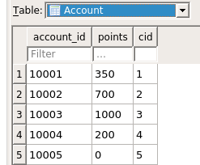

Book Store Project Database: ER Diagram and SQL
By Christopher Williams
Date: 16/Feb/2023
Welcome back to our little book store! Now that we have created the requirements and made a general architecture, let's start actually making the app!
Usually our next step is to figure out a software development process that we should use like Agile, Waterfall or Iterative but our project is so small and it already has a clear focus that we don't really need it, so for this project we are not defining one. That will be done in a later article where I can create a big hypothetical project that can more clearly show the advantages and disadvantages between them.
We do have to answer the question though of what to develop first and in our instance it will be the database.

ER Diagram
The reason why we are creating the database first, is because the structure we are creating here will influence other parts of the app. The client needs to know what information it can and wants to request in order to request it. Since the client does not know what to request, the server doesn't have any reason to request anything from the database nor could it have any format for the data since it does not know what range of data it can use. Everything falls from the database in this structure so if we can design and implement the database well then it will make the server and the client easier to implement.
Let's now plan out our database. A database is simply a big storage space that also links all the data, what we will call entities, together through relationships so it can get very complicated very quickly for even a small database. We use ER diagrams because they can abstract the details and the relationships in a fine enough away so we will know that we need to implement in the database. Luckily, it is easy to transfer the ER design to the actual database which makes it perfect for us to use.
As you can see, ER Diagrams can take up a lot of space and this is only a basic one with a few components. There are much more complicated forms that can better represent more specific relationships like one entity being entirely tied to another in its existence which is called a weak entity but we will keep it simple here. Let's take a closer look at some of these details to better understand it.
The square boxes represent some type of entity like a customer. This is what we first draw on our diagram when we are making an ER diagram since this is what everything else will be based on.
The circles are attributes that are associated with that entity. The two main types of attributes are key attributes and non key attributes. Key attributes are distinct values that can be used to make sure that no two instances of the same entity exist and the primary key attribute is the attribute that is chosen to be this desider, this is marked with an underline in the diagram. You can easily have many attributes be keys and even sets of attributes can be keys as well. These attributes can have attributes of their own like an overall name attribute being split into a first and last name and these are called compound attributes. An entity can also have multiple distinct versions of that attribute like a customer having multiple addresses and this is shown with a double circle around that attribute.
The diamonds are relationships that are related between entities. This can even be a relationship to itself like a supervisor employee being related to a sub employee as you can see in this example. These relationships can also have attributes of their own like how many of one type of book is in an order.
The lines between the entities and the relationships represent the constraints that are applied. An arrow means that there can only be at most one instance of an entity tied to another of the opposing entity while a bolded line means that it is required to have at least one entity tied to it. It it does not have an arrow it means you can multiples of one entity tied to the other and no bold means that you have zero of one entities tied to the other.
This example here means that a customer does not need to have an order but every order must have at least and at most one customer related to it.
This one means that a customer does not need an account but can have only one account at a time while every account must have a single customer related to it. Also shown here is that every account must have a single login and every login must be tied to only one account.
Our final example is that a book does not need to be at any store but every store must have at least one book in its inventory.
Now that we have our diagram, let's start to build our database
Database Implementation
Our first question now that we are implementing a database is what kind of database can we use. The main one that is used is called a Relational Database Management System and will use a variant of SQL. This is one we will be using because it is standard for this kind of work, which makes it easier to build it and to build from it along with being easier to maintain. Our problem also conforms well to the design and since it is nearly one to one translation to a normal RDBMS it does not make much sense to use a NoSQL implementation. The data can be made very standardized from a table from a RDBMS so the calls are lighter and less complicated and the entities are going to be very static so there is no need for the flexibility NoSQL can provide.
Some types of RDBMS are MySQL, SQLite, Oracle SQL and Microsoft's version of SQL
NoSQL as it implicitly implies is a vague category of databases. They can be in a more document form like a JSON form, they can be more like a giant hash table with keys and values or just be a type of graph. They tend to be very flexible with the datatypes so if you have lots of unique types of data like incomplete data forms from users then NoSQL can be a better option. They also scale more horizontally so you can add more servers rather than building up a server which can be easier to do with massive amounts of data.
A very common type you would probably have heard of is MongoDB, which is a document type database but there is also Apache Giraph which is a graph based database and many more.
In this project we are going to be using a normal RDBMS, in our case SQLite mostly because it is open source, light weight and it can very easily be set up on a computer. Another popular version is MySQL which is actually the preferred option if this was going to a real client because while it runs more heavily than SQLite, it is also open source and can easily send information through a network. SQLite tends to be more favored when being embedded in the device that is using the database because of the way it handles the files. The two systems have other differences like SQLite having fewer data types available but for a demonstration the differences are negligible because they operate similarly enough.
SQL can of course be written directly in Notepad or VIM if the document ends with .sql and this is the usual way I write SQL but you can use IDEs like SQLDeveloper by Oracle which can also connect to database that you have connected over a network or a database that is being run on your computer. To run SQL though you will need some type of database browser to actually see what is happening. Here we will be using DB Browser for SQLite because we do not need to set up a server in the first place to run it for this demonstration.
SQL is technically divided into five parts but only three are used all the time. The first one is the Data Definition Language which is for creating and destroying tables. Data Manipulation Language is to modify the database like inserting records. Data Query Language is used to fetch records. The final two are not used as often and are Transaction Control Language, which is for commiting and rolling back the database, and Data Control Language, which is for granting access to the database. When you are typing in commands these distinctions do not matter but if you need to search for commands this can make it easier to find the commands you need.
You can check out the sql download to see how sql works and it has comments written to describe all of the intricacies of SQL. Let's just take a look at a few examples. We will only be focusing on creating records and tables but in a future article we will go over actually using the database.
This is a single statement that shows how to create a table. As you can see every statement is ended with a ";", this is not needed if only one statement is being runned. Comments are made with "--" and everything past that line is made as a comment, there is no ending comment sign. We are first declaring the variables. Each variable is first given a name then their type, which could be a number type or a string type. Depending on the type it will need additional parameters like for the string types (VARCHAR2) just need a value to know how many max characters it will have. For numbers, the first number is the max number of digits and the second number is how many floating point digits there are. The primary key sets the primary key that we saw from the ER diagram. We can also link different tables by first saying which value in this table is going to be linked (cid) and then adding the other table (Customer) with its variable to be linked (id) by using the FOREIGN KEY REFERENCES command. You might have noticed a little pattern that the table names are capitalized on the first letter, the variables are all lowercase and finally the key word commands are in all capitals. This is simply a common style choice to quickly show those three different things of tables, variables and keywords. SQL is itself not case sensitive so you do not need to follow style but it is a good idea to follow it.
CREATE TABLE Address
(
state VARCHAR2(2), -- this is what a comment looks like
street VARCHAR2(38),
zipcode NUMBER(5,0),
city VARCHAR2(38),
cid NUMBER(5,0),
PRIMARY KEY(state, street, zipcode, city),
FOREIGN KEY(cid) REFERENCES Customer(id)
);
This statement here is to insert records. First is the keywords INSERT INTO then we add the table with the variables names and then finally add the variables themselves. Some commands have either shortcuts or additional items you can add and INSERT INTO is one of them. You can omit the variable names and simply add the values but if you do you must add in all of the values in the order of the table while if you still have the variable names you can change the order or choose not to add all of the variables if you also omit the variable name as well.
INSERT INTO Customer (id, age, first_name, last_name) VALUES (3, 35, 'Mary', 'Goodwin');
INSERT INTO Customer VALUES (3, 35, ‘Mary’, ‘Goodwin’);
You can see more examples inside of the sql document but let's now look at how to translate between the two.
Back at our ER diagram we have three types of relationships. The first one is a many to many relationship as shown here. The way we translate that from the diagram is by adding a new table between the two and then having the two related tables' primary keys contained in that new table. This is done because SQL is very static with data so can’t flexibly connect data so we will individually tie them together while keeping the two entities separate from each other. We do the same for multi variable attributes like for our address attribute.
Many to many relationship.
Our new table to connect the two tables. Primary key is isbn and store_id.
Our unchanged store table. Primary key is store_id.
Our unchanged book table. Primary key is isbn.
Our new table to connect for the addresses that was an attribute for customer. It's primary key is everything but the cid.
Our old customer table. Primary key is id.
The next type of relationship is the one to one relationship as shown here. The way to translate is to simply tie one table to another. It makes sense to keep it uniform in a way to minimize columns in the database. In this example the account table will reference the customer table since not only does the customer table have more attributes but also is connected to a lot of different entities.
The one to one relationship being shown in the tables is between account and login but customer and account are also one to one as well.

Our account table primary key is account_id but cid is made unique and must not be null.
Our login table. Primary key is user_name and account_id is made unique and must not be null.
Our last relationship is a one to many table. We actually do a similar thing with the one to one relationship by tieing one table to another with a reference but in this instance we always reference in the many table, the singular table like with the Order table having the cid as a part of its attributes. We have to make sure though that the constraints are set right in the first place.
Our one to many relationship. The one side of the relationship is the order and the many side is the customer.
Our order table. Primary key is order_id.
Our old customer table. Primary key is id.
Speaking of constraints we also have to translate those as well. We do this by either setting it as a part of the key or by using the command unique or by using another program to check for it. The main commands in SQL we can use are UNIQUE and of course the key. With the key we can make sure every one of those entities have that value and use that attribute at least once since null values are not allowed. We can also control if we want to allow no value or at most value by using the command UNIQUE instead since it allows null values which are technically not the same values to each other. Be careful though if you use a primary key because if you have multiple variables in it then the constraint applies only when all of the variables are the same, not just some. If you have this issue then a solution is to make it unique to prevent values being repeated but then also making the value not null so it has to have a value. Some things are harder to control such as every store having at least one book because we can not mark in the store entity what books it contains. We can use another command called SELECT and JOIN to do so and that will be for another article that delves into SQL a little bit more by itself.
There are more commands inside of the sql document so I encourage you to look over it and read the comments.
That is all for now, see you next time when we explore the server side of the application.